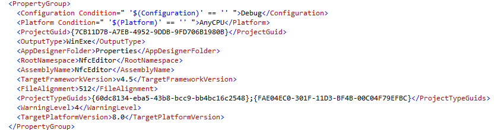
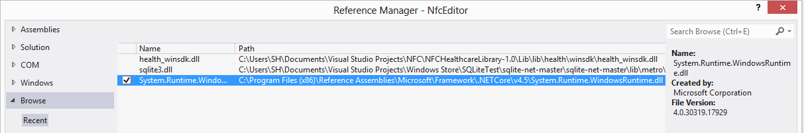

NFC Editor
Introduction
This example shows howto use a proximity device for a Windows 8 Desktop Application. It implements a very simple editor for reading and writing URLs from respectively to a NFC tag. Please note that the NFC tag must be a formatted in
NDEF format. Writing or reading other types of information is also possible but not scope of this example. Please refer
to the MSDN documentation for a list of
supported information types and a
getting started guide for using NFCs.
As a prerequisite you must have installed a NFC device that is recognized as Proximity device by Windows 8. I used the Sony RC-S380
Cardreader/writer and Sony's device driver that can be found in the free
SDK for Windows. Others devices may also work fine, but they have to be recognized as Proximity devices. You
can check in the Windows device manager:

The API for Proximity devices resides in Windows RT. For a Windows 8 Desktop Application you have to tell Visual Studio the targe platform version. Unfortunately there is no support in the graphical user interface for that, but you can simply edit the project file definition.
In our example we will first create a new Windows 8 Project for a WPF application. In order to access the proximity API we need to access the Windows Runtime as described in the MSDN documentation: When the project has been created unload the project and open the project file. Now you add a line specifying Windows 8 as the TargetPlatformVersion:

After adding the target platform version you can reload the project. Now a the Core tab will appear and you can add a reference to Windows:

Finally add a reference to the Windows Runtime in the folder containing the reference assemblies:

Building the Sample
The example project has already been prepared as described in the previous section. In order to build the NFC Editor simple run the build command.
Description
The sample makes use of the proximity API. All logic is encapsulated in the MainWindowViewModel.cs file. In the constructor the the events for arring and departing NFC labels are wired:
_proximityDevice = ProximityDevice.GetDefault();
if (_proximityDevice != null)
{
_proximityDevice.DeviceArrived += _proximityDevice_DeviceArrived;
_proximityDevice.DeviceDeparted += _proximityDevice_DeviceDeparted;
_MessageType = _proximityDevice.SubscribeForMessage("WindowsUri", MessageReceivedHandler);
}
_proximityDevice = ProximityDevice.GetDefault(); if (_proximityDevice != null) { _proximityDevice.DeviceArrived += _proximityDevice_DeviceArrived; _proximityDevice.DeviceDeparted += _proximityDevice_DeviceDeparted; _MessageType = _proximityDevice.SubscribeForMessage("WindowsUri", MessageReceivedHandler); }
The proximity device subscribes for messages of the type WindowsUri: As soon as an NFC tag bearing a URI is detected, the method MessageReceivedHandler will be called. Since the NFC tag contains the URI encoded as 16bit Unicode, this has to be taken into account when reading the information from the NFC tag:
using (var reader = DataReader.FromBuffer(message.Data))
{
reader.UnicodeEncoding = Windows.Storage.Streams.UnicodeEncoding.Utf16LE;
string receivedString = reader.ReadString(reader.UnconsumedBufferLength / 2 - 1);
Debug.WriteLine("Received message from NFC: " + receivedString);
Url = receivedString;
}
using (var reader = DataReader.FromBuffer(message.Data)) { reader.UnicodeEncoding = Windows.Storage.Streams.UnicodeEncoding.Utf16LE; string receivedString = reader.ReadString(reader.UnconsumedBufferLength / 2 - 1); Debug.WriteLine("Received message from NFC: " + receivedString); Url = receivedString; }
using (var writer = new DataWriter{ UnicodeEncoding = Windows.Storage.Streams.UnicodeEncoding.Utf16LE } )
{
Debug.WriteLine("Writing message to NFC: " + Url);
writer.WriteString(Url);
long id = _proximityDevice.PublishBinaryMessage("WindowsUri:WriteTag", writer.DetachBuffer());
_proximityDevice.StopPublishingMessage(id);
}
using (var writer = new DataWriter{ UnicodeEncoding = Windows.Storage.Streams.UnicodeEncoding.Utf16LE } ) { Debug.WriteLine("Writing message to NFC: " + Url); writer.WriteString(Url); long id = _proximityDevice.PublishBinaryMessage("WindowsUri:WriteTag", writer.DetachBuffer()); _proximityDevice.StopPublishingMessage(id); }